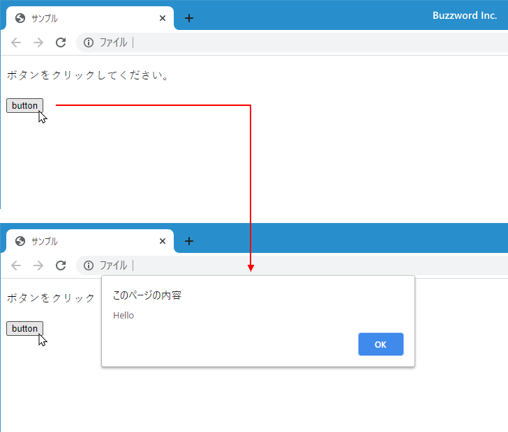
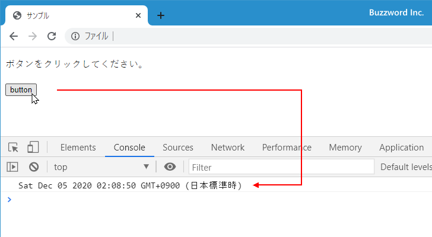

- Home ›
- JavaScript入門 ›
- イベント処理
HTML要素の属性としてイベントハンドラを登録する
イベントハンドラを登録するには 3 つの方法がありますが、ここでは HTML 要素の属性としてイベントハンドラを登録する方法について解説します。なおこの方法では HTML のコードの中に JavaScript のコードが含まれることになり現在は推奨されていません。 DOM のプロパティを使用する方法またはイベントリスナーを使用する方法を使ってください。
HTML要素の属性としてイベントハンドラを登録する
HTML要素の属性を使ってイベントハンドラを登録する方法です。例えば input 要素でマウスでクリックしたときに実行するイベントハンドラを登録するには次のように記述します。
<input type="button" value="button" onclick="イベントハンドラ">
onclick 属性に対する値としてイベントハンドラを記述します。イベントハンドラの個所には実行する JavaScript のコードや関数を記述します。
イベントハンドラとして JavaScript のコードを直接記述するには次のように記述します。実行する文が一つの場合は末尾のセミコロンは省略できます。
<input type="button" value="button" onclick="console.log('Hello')">
複数の文を記述することもできます。最後の文以外には末尾にセミコロン(;)を忘れないようにしてください。
<input type="button" value="button" onclick="let d = new Date();console.log(d.toString())">
属性名はイベントの種類毎に異なります。 click イベントに対するイベントハンドラの登録には onclick 属性、 mousedown イベントに対するイベントハンドラを登録するには onmousedown 属性、のように on + イベント名 になります。どのようなイベントがあるのかについてはこのページの最後に記載しています。
※ HTML では属性名で大文字と小文字は区別しません。その為、 onclick="..." ではなく onCllick="..." や ONCLICK="..." のように記述することもできます。
次のサンプルを見てください。
<!DOCTYPE html>
<html lang="ja">
<head>
<meta charset="UTF-8">
<title>サンプル</title>
</head>
<body>
<p>ボタンをクリックしてください。</p>
<input type="button" value="button" onclick="alert('Hello')">
</body>
</html>
表示されたボタンをクリックすると、アラートダイアログを表示します。

イベントハンドラで関数を呼びだす
イベントハンドラには JavaScript のコードを直接記述するほかに、別途定義した関数をイベントハンドラとして呼び出すこともできます。
<script>
function butotnClick(){
console.log('Hello');
}
</script>
<input type="button" value="button" onclick="buttonClick()">
イベントハンドラとして別途定義した buttonClick 関数を呼びだしています。
HTMLの属性に対してイベントハンドラを登録する場合はコールバック関数を設定するのではなく単に外部に定義した関数を呼びだしています。その為、「関数名()」の形式で記述してください。関数を呼びだすときに任意の引数を指定することもできます。
次のサンプルを見てください。
<!DOCTYPE html>
<html lang="ja">
<head>
<meta charset="UTF-8">
<title>サンプル</title>
</head>
<body>
<p>ボタンをクリックしてください。</p>
<script>
function buttonClick(){
let d = new Date();
console.log(d.toString());
}
</script>
<input type="button" value="button" onclick="buttonClick()">
</body>
</html>
表示されたボタンをクリックすると、現在の日時を取得しコンソールに出力します。

イベントの種類の一覧
HTML 要素の属性としてイベントハンドラを登録する場合は、処理を記述したいイベントの種類に対応した属性に対してイベントハンドラを記述する必要があります。設定可能なイベントの種類と属性の一覧は次のページを参照されてください。
・8.1.7.2 Event handlers on elements, Document objects, and Window objects
非常に数多くのイベントハンドラ用の属性が用意されています。この中で比較的よく使用されると思われるものを簡単にご紹介します。
| 属性値 | イベントの種類 |
|---|---|
| onclick | マウスのボタンが要素の上でクリックされたとき |
| oncontextmenu | マウスが右クリックされたとき |
| ondblclick | マウスのボタンが要素の上でダブルクリックされたとき |
| onmousedown | マウスが要素の上で押されているとき |
| onmouseup | マウスのボタンが要素の上で離されたとき |
| onmousemove | マウスが要素の上を移動しているとき |
| onmouseover | マウスがリスナーが接続されている要素または子要素に移動したとき |
| onmouseout | マウスがリスナーが接続されている要素または子要素から外れたとき |
| onselect | テキストが選択されているとき |
| onwheel | マウスホイールが回転しているとき |
| onauxclick | マウスのメイン以外のボタン(中央のボタンなど)が要素の上でクリックされたとき |
| onkeydown | いずれかのキーが押されたとき |
| onkeyup | いずれかのキーが離されたとき |
| onkeypress | いずれかのキーが押された状態にあるとき |
| onblur | 要素がフォーカスを失ったとき(バブリングなし) |
| onfocus | 要素がフォーカスを受け取ったとき(バブリングなし) |
| onchange | 要素の値の変更が確定したとき(<input>, <select>, <textarea>) |
| oninput | 要素の値が変更したとき(<input>, <select>, <textarea>) |
| onsubmit | サブミットボタンが押されたとき |
| onreset | リセットボタンが押されたとき |
| onload | ページ全体がスタイルシートや画像などのすべて読み込まれたとき |
| onabort | エラー以外の原因で読み込みが中止されたとき |
| onerror | エラーが発生して読み込みが失敗したとき |
処理を行いたいイベントの種類に合わせて対応する属性にイベントハンドラを登録してください。
-- --
HTML 要素の属性としてイベントハンドラを登録する方法について解説しました。
( Written by Tatsuo Ikura )

著者 / TATSUO IKURA
初心者～中級者の方を対象としたプログラミング方法や開発環境の構築の解説を行うサイトの運営を行っています。